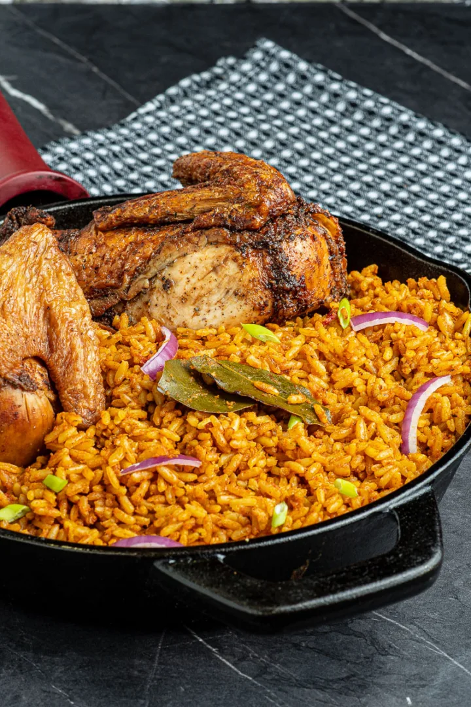

Jollof Rice

Description
Jollof rice is a staple in West African cuisine. It’s made from rice, tomatoes, onions, peppers, and other seasonings. The dish is cooked in one pot. It’s simple and easy to make at home—and the end result is absolutely delicious!
Jollof rice is a delicious royal dish originating in West Africa. It is one of the most common West African dishes eaten in the regions of Nigeria, Ghana, Togo, Senegal, Gambia, Mali, Sierra Leone, Ivory Coast, Cameroun, and Liberia. Although it is believed to have originated from the Wolof people in northwestern Senegal.
The recipe varies from country to country, region to region of the continent, but it always starts with a tomato base.
Ingredients
- Rice
- Canned tomato
- Fresh tomatoes
- Garlic
- Scotch bonnet (Rodo)
- Bell Peppers (Tatashe)
- Ginger
- Vegetable oil (Ororo)
- Onions
- Cow SKin (Kpomo)
- Dried fish
- Chicken
- Beef
- Scent leaves
- Bay leaves
- Seasoning (Maggi,etc.)
- Salt
Steps
- The inevitable foundation for building up the flavor in this meal is to start by sauteeing the Onions. This should take about 3 to 5 minutes. The next thing is to stir in the tomato paste. This adds a deep and rich tomato flavor; I simply fry this for another 5 minutes or thereabout.
- Add the ginger and garlic and cook along with the tomato paste for another two minutes; Actually, by the time this is ready, you will notice it in the smell. If you keep it cooking any longer, you might risk burning them.
- Add the blended peppers. Usually, there is no particular time frame for frying this pepper. I often stop when the sauce becomes really thick, and the oil literally floats on top of the sauce. At this point, most of the water is gone, and the sauce no longer smells raw. Trust me, you will know, but just in case you are still in doubt, I would say maybe 15 to 20 minutes depending on the quantity of water in your blended pepper.
- Add the thyme, curry powder, salt, white pepper (good but optional), and seasoning cubes. Adjust the seasoning at this point if there is a need to.
- stir in the Rice. Make sure you stir the rice properly until you cover each grain of rice with the sauce.
- Add the chicken stock and kpomo. Give it a brief stir and cover it up with a tight-fitting lid. If your lid is not fitting enough, simply cover the rice with foil paper before covering it with the lid. This is because Jollof needs a lot of steam in order to turn out well.
- Once the rice comes to a boil, reduce the heat to medium-low immediately and continue to cook until the rice is done, about 20 to 30 minutes.